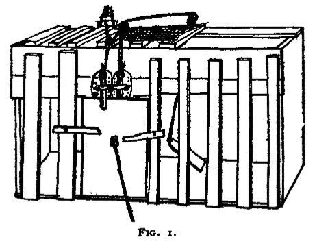
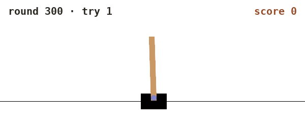
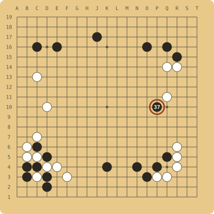
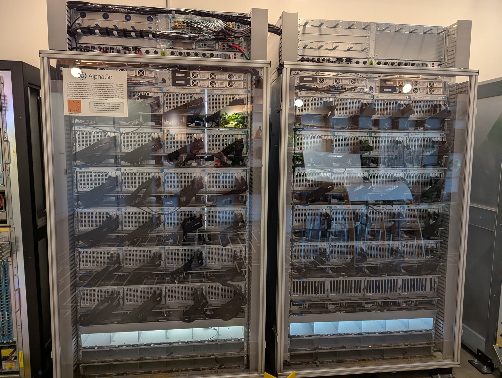

Picture a robot arm at a table with a black bowl and a plate on it. No one steers the arm through the task, and no one shows it what a person would do. The checks one thing when each try ends: is the bowl on the plate? It answers 1 for yes and 0 for no.
Figure 1.1 · The setup. The arm gets no examples of what to do. All it ever receives is a 1 or a 0 when a try ends, shown here in burnt sienna, the colour this series uses for every score. Our drawing.
Predict first
The arm only ever hears a 1 or a 0 after a whole try. What could it learn from that, and what can't it learn?
Compare with the chapter
It can learn which of its own tries went better, and lean towards whatever those tries did. It can't learn which moment of a try mattered, or what it should have done instead. Keep the second half in mind; it's what chapter 2 is about.
Suppose the arm already reaches for the bowl now and then, and lands it on the plate in some of its tries but not most. , or RL, is the rule that makes the lucky tries a little more likely next time, and then again after the next batch of tries, until the bowl ends up on the plate most of the time.
Nobody ever tells the arm which move was right. It only ever learns how well a whole try went.
The idea is older than computers. In 1898 the psychologist Edward Thorndike shut cats in small cages, now known as puzzle boxes, like the one in figure 1.2. A cat could get out and reach its reward, such as food, only by working a lever or a button, and at first it hit on that by trying things at random. Over repeated trials it got out faster and faster. In 1911 Thorndike called the rule behind this the law of effect: "Of several responses made to the same situation, those which are accompanied or closely followed by satisfaction to the animal will, other things being equal, be more firmly connected with the situation." Reinforcement learning gives the same rule to a computer.

Figure 1.2 · A puzzle box, 1898. Thorndike's own drawing of one of his boxes. The cat inside had to find the one action that opened the door. Fig. 1 of Animal Intelligence (Thorndike 1898), public domain, via Wikimedia Commons.
A second example: a pole on a cart
The second example is much smaller. It's called CartPole, and it comes from a 1983 paper by Andrew Barto, Richard Sutton and Charles Anderson. A pole stands on a cart, fixed at the bottom by a hinge, and the cart runs along a short track. At every step the learner moves the cart left or right. When the pole leans to the right, moving the cart right brings it back under the pole, and moving it left lets the pole fall further.
The score is 1 point for every step the pole stays up. A try ends when the pole leans more than 12 degrees, when the cart runs off the end of the track, or after 500 steps. So a try's score is how many steps it lasted, and 500 is the most it can get. The simulation runs 50 steps a second, which makes 500 steps ten seconds of balancing.
We ran CartPole in Gymnasium, a free library of test problems for RL, with a learner that starts out moving left or right at random, half the time each. Figure 1.3 shows its first four tries.
Figure 1.3 · The first four tries. Our learner's first four tries, one after another, slowed to half speed. The number at the top right is the score so far, one point per step. They scored 31, 66, 22 and 47. The clip plays twice when you scroll to it; tap it to pause or play again. Our own run, rendered with Gymnasium (MIT licence).
All four tries are over in less than a second and a half. Nobody tells this learner which move was right either. All it gets after each try is the score.
Five words and a loop
The field describes every problem with the same five words. The is the learner. The is the world the agent acts in. An is what the agent does at one moment, and the is the score the environment hands back. The is the agent's current habits: "in a situation like this, I tend to do that". Here are the five words for both examples.
Word
The arm
CartPole
agent
the network that moves the arm
the program that picks left or right
environment
the simulated table, its objects and their physics
the cart, the pole, the track and their physics
action
one small move of the hand or the gripper
moving the cart left or right
reward
1 if the bowl is on the plate when the try ends, otherwise 0
1 point for every step the pole stays up
policy
how likely it is to make each move, in each situation
how likely it is to move left, for each position of the cart and the pole
Figure 1.4 · Richard Sutton, in 2021. The five words are the vocabulary of the field's textbook, Reinforcement Learning: An Introduction, which he wrote with Andrew Barto. In March 2025 the two of them received the 2024 ACM Turing Award "for developing the conceptual and algorithmic foundations of reinforcement learning." Photo: Numenta, CC BY 3.0, via Wikimedia Commons.
These words fit together as a loop. The agent looks at the situation. For the arm that's a camera picture, and for CartPole it's four numbers: where the cart is, how fast it's going, how far the pole leans and how fast it's tipping. The agent acts, the environment changes, and a reward comes back. In CartPole it comes at every step, and for the arm only when a try ends. One try from start to finish is an . After a batch of episodes the policy is adjusted towards whatever scored higher, and the loop starts again. Point at any part of figure 1.5 to pick it out.
Figure 1.5 · Five words and a loop. Ochre is the learner, sap green is the action and the world it acts on, and burnt sienna is the score. The picture comes back every step; the score comes back only once per try. Point at a part, or tap it, to pick it out.
Do more of what scored well
A policy doesn't pick one fixed action. It gives every possible action a chance of being picked, and learning changes those chances. Here is the smallest version, with numbers.
Say that at one point in the task the policy reaches to the left half the time and to the right half the time. The arm makes four tries.
Predict first
The four tries score 1, 0, 0 and 1. Which tries should become more likely next time, which less, and by how much compared with each other?
Compare with the chapter
The average is 0.5. Take each try's score minus the average: +0.5, −0.5, −0.5 and +0.5. The two tries that scored 1 get the actions they took made a bit more likely, and the two that scored 0 get theirs made a bit less likely, all by the same amount. If both successful tries reached left, "reach left" might now come up 55 times in 100 instead of 50.
In one line, the rule is this:
change in an action's chance ∝ score of the try it was in − the average score
∝ means "goes up and down with"
People call the difference on the right the , because it measures how much better than usual a try went. Each change is kept small, so one lucky try can't rewrite the habits. Ronald Williams wrote this rule down in 1992, and his algorithm, , still sits under most of the methods in this series.
Figure 1.6 starts with those four tries. Tap any score to flip it, and the arrows and the chance of reaching left change straight away.
Tap a score to flip it between 0 and 1.
Chance of reaching left next time
50% → 55%
Figure 1.6 · Four tries and the push each one gives. Each arrow runs from the average score to a try's own score, and its length is the try's score minus the average. An arrow pointing up makes what that try did more likely next time, and one pointing down makes it less likely. The bar shows what one push does to the chance of reaching left, which started at 50% (the dotted mark). It opens on the four tries from the text. The rule is the one above. How big a step it takes is our choice, made so that the text's example comes out at 55%.
Taking away the average matters more than it looks. In CartPole every try earns some points, so pushing up every move by its raw score would push up whatever the learner happened to do, good or bad. With the average taken off, only the tries that beat the usual result get pushed up.
Predict, then try it
Say the bowl is almost out of reach, and all four tries score 0. What happens to the chance of reaching left? Write a guess, then set the four scores in figure 1.6 to 0.
The average is 0, so every try's score minus the average is 0, and the chance stays at 50%. A learner that never succeeds has nothing to learn from. That's the first problem in chapter 2. Four scores of 1 leave it at 50% as well, because when every try does equally well there's nothing to tell them apart.
Can a rule this small learn anything real? We gave it to the CartPole learner from figure 1.3. In each round it makes 16 tries and works out their average score. Then every move in every try is made a little more or a little less likely, by that try's score minus the average, the same rule as in figure 1.6. Figure 1.7 shows 300 rounds of it.
Figure 1.7 · 300 rounds of the same rule. Top, the average score of each round's 16 tries. The dark line is the run we filmed, and the two pale lines are the same rule run again from other random starts. Point at the chart to read off a round. Below, the first try of round 300 at real speed. It lasted the full 500 steps. Our own run (the script, every score), rendered with Gymnasium (MIT licence).
In the first round the 16 tries lasted 22.9 steps on average. By round 300 the average was 497.5, close to the most a try can score. We ran the whole thing twice more from different random starts, and those runs ended at 500 and 456.7. Nobody told the learner to move the cart towards the side the pole leans. By round 300 it does: the further the pole leans or tips to one side, the more likely it is to move the cart that way. All it ever saw was scores.
Rules from the same family work on much harder problems. In 2017 DeepMind put simulated bodies on courses of "challenging terrains and obstacles" and gave them "a simple reward function based on forward progress". With a policy-gradient method, the family this chapter's rule belongs to, they learned to "run, jump, crouch and turn" (figure 1.8).
Figure 1.8 · Learning to run from one reward. DeepMind's video of the trained bodies, 3 min 25 s. The only reward was for moving forward. Heess et al. (2017), "Emergence of Locomotion Behaviours in Rich Environments"; video by Google DeepMind on YouTube.
Go deeper
Where the rule comes from, and the code we ran

Our code
The run in figure 1.7, in about 110 lines
The script trains the CartPole learner with this chapter's rule, saves every round's scores and films the tries. Change the step size or the number of tries a round and run it again.
Chapter 1 of Reinforcement Learning: An Introduction sets out the five words with tic-tac-toe. Chapter 13 derives this page's rule, including why taking away a baseline such as the average helps.
Ronald Williams, "Simple statistical gradient-following algorithms for connectionist reinforcement learning", Machine Learning 8. Each update there is the reward minus a baseline, times the direction that makes the chosen action more likely.
Most machine learning is . Every training example comes with the right answer, and the model is corrected towards it. A learner that copies demonstrations, recordings of an expert doing the task, learns this way, and that's called . It's like studying with the answer key open.
Predict first
One learner copies an expert. Another is only told its grade. Which one could end up better than the expert, and why?
Compare with the chapter
The one told its grade. Copying is corrected towards what the expert did, so at best it matches the expert. A learner pushed towards a higher score reinforces any move that raises the score, whether or not the expert ever made it. The price is that it needs far more tries.
Figure 1.9 · Two ways to learn. Same layout, one difference: on the left every action is compared with the expert's, and on the right the only feedback is one score per try.
RL is like doing practice problems where the teacher only tells you your grade. A grade says how well you did but not what you should have written, so the feedback is weaker and the learner needs many more tries. In return, nothing caps it at the level of its teacher. A learner that copies people can at best match them. A learner pushed towards a higher score can find moves no person showed it. learned chess, shogi and Go only by playing against itself, starting from random play, and it beat a world-champion program in each of the three. Chapter 3 tells that story.
Three famous results show it happening. The first is DeepMind's DQN, published in Nature in 2015. It learned Atari games "receiving only the pixels and the game score as inputs", and reached "a level comparable to that of a professional human games tester across a set of 49 games, using the same algorithm, network architecture and hyperparameters". In Breakout, after about 600 games, it began digging a tunnel up one side of the wall and sending the ball round the back. In the AlphaGo film, Demis Hassabis says the researchers "didn't know about that strategy".
The second is AlphaGo. It learned first from human games and then by playing against itself, and in March 2016 it beat the Go champion Lee Sedol 4 games to 1 in Seoul. In game 2 it played a stone that, by DeepMind's account, "had a 1 in 10,000 chance of being played by a human". That stone is move 37, ringed in figure 1.10.
The third is OpenAI's hide-and-seek, from 2019. Two teams played in a room with boxes, ramps and walls, and over millions of rounds the hiders learned to build shelters out of boxes. Then the seekers learned to use ramps to get over the walls, and the hiders learned to lock the ramps away before building. "We did not explicitly incentivize any of these behaviors," says the narrator of OpenAI's video. The makers' own videos of all three are in figure 1.11.

The board after move 37

The computers AlphaGo ran on, now retired
Figure 1.10 · Move 37. Left, game 2 on 10 March 2016, with AlphaGo playing black: the ringed stone is move 37. Right, AlphaGo's racks of computers on display after they were taken out of service; the placard on the left one says AlphaGo. Board: our drawing from the game record in the CWI Go archive, made by tools/go/board.py. Photo: Wikimedia Commons user Immigrant laborer, 2025, CC0.
Video · 1 min
DQN digs a tunnel in Breakout
The same agent after 100, 200, 400 and 600 games. By the last, it sends the ball round the back of the wall.
Each stage in turn: running away, box shelters, ramps, locked ramps, and seekers who learn to "surf" boxes.
OpenAI, "Multi-Agent Hide and Seek", 2019 · YouTube
Figure 1.11 · Three results, in their makers' own videos. Each clip starts where its story starts. Nobody showed these learners the tunnel, move 37 or the box shelters; each found them by being pushed towards a higher score.
A common wrong belief
It's easy to think a reward works like a label that tells the model which move was right. It doesn't. In the bowl example the score comes once, after up to a few hundred steps, and it never says which of those steps helped. Sorting that out is one of the three things that make RL hard, and chapter 2 is about them.
Check yourself
Name the agent, environment, action, reward and policy for a program that learns to play chess.
Show answer
The agent is the chess program. The environment is the board and the opponent. An action is one move. The reward is the result at the end, for example +1 for a win, 0 for a draw and −1 for a loss. The policy is the program's current habit of which move it tends to play in each position.
Four CartPole tries keep the pole up for 20, 40, 60 and 80 steps. Which tries get their moves pushed up, and how do the pushes compare?
Show answer
The average is 50 steps, so the pushes are −30, −10, +10 and +30. The tries that lasted 60 and 80 steps get their moves pushed up, the 80-step try three times as hard as the 60-step one. The tries that lasted 20 and 40 steps get theirs pushed down.
Why can a learner that is only given a score end up better than the people who made its training data, when a learner that copies them can't? Say it in your own words.
Show answer
Copying is corrected towards what the people did, so the best it can do is match them. RL is pushed towards a higher score, and any move that raises the score gets reinforced, whether or not a person ever made it.
In questions 4 to 6, pick the answer you think is right. The option opens and says whether it's right and why, and you can open the others afterwards to see what's wrong with them.
In the bowl example, what does the reward tell the arm?
Which of its moves was the right one at each step.
No. That's the common wrong belief. The score comes once, when the try ends, and says nothing about which of the steps helped.
How well the whole try went, as one number at the end.
Right. A 1 if the bowl ended on the plate and a 0 if it didn't, once per try.
What a person would have done in the same spot.
No. That's what a demonstration gives, in behaviour cloning. In this setup no one shows the arm anything.
Four tries score 3, 3, 3 and 3 points. What does the rule do to the actions in them?
It pushes them all up, since every try earned points.
No. That would be pushing by the raw score. The rule pushes by the score minus the average, and here that's 0 for every try.
It pushes up the first try most, because it came first.
No. The order of the tries in a batch doesn't matter to the rule. Only each try's score compared with the average does.
Nothing. Every try's score minus the average is 0.
Right. No try did better than usual, so there's nothing to push towards. It's the same reason the arm learns nothing when every try scores 0.
A chat model is trained with RL, using the same five words. What is one action?
The next word it writes.
Right. Each word, or piece of a word, it picks is one action. One whole answer is one try, an episode, made of many actions.
One whole answer.
No. A whole answer is one try, an episode, and it's made of many actions, one per word.
The grade the answer gets.
No. The grade is the reward. It comes once, when the answer is finished, just as the arm's 1 or 0 comes when a try ends.
Sources
Sutton and Barto (2018), Reinforcement Learning: An Introduction, 2nd ed., MIT Press: chapter 1 for the five words, chapter 13 for policy gradients and the baseline. Free online.
Williams (1992), "Simple statistical gradient-following algorithms for connectionist reinforcement learning", Machine Learning 8(3–4), 229–256. doi.org/10.1007/BF00992696. Checked on Crossref, 2026-11-13.
Silver et al. (2017), "Mastering Chess and Shogi by Self-Play with a General Reinforcement Learning Algorithm". arXiv 1712.01815: "Starting from random play … convincingly defeated a world-champion program in each case." Checked 2026-11-13.
Thorndike (1898), Animal Intelligence: An Experimental Study of the Associative Processes in Animals, Fig. 1 (figure 1.2, public domain, via Wikimedia Commons). The law of effect is quoted from Thorndike (1911), Animal Intelligence, p. 244, archive.org. What the cats had to do: Britannica, "Thorndike puzzle box", checked 2026-11-13.
Heess et al. (2017), "Emergence of Locomotion Behaviours in Rich Environments", arXiv 1707.02286 (abstract, checked 2026-11-13); video by Google DeepMind, YouTube.
Mnih et al. (2015), "Human-level control through deep reinforcement learning", Nature 518, nature.com/articles/nature14236 (abstract, checked 2026-11-13). The 600 games and the tunnel are from the description of Google DeepMind's "DQN Breakout" video; Hassabis's words are from AlphaGo – The Movie.
AlphaGo: Google DeepMind, AlphaGo (the 4–1 result and the 1 in 10,000 chance); Silver et al. (2016), Nature 529. The game record of game 2 is from the CWI Go archive. The film's chapter times are YouTube's own chapter list for WXuK6gekU1Y, read 2026-11-13. The rack photo is CC0, Wikimedia Commons.
Baker et al. (2019), "Emergent Tool Use From Multi-Agent Autocurricula", arXiv 1909.07528 (the six stages, Figure 1 caption); the quote is from OpenAI's video "Multi-Agent Hide and Seek".
Barto, Sutton and Anderson (1983), "Neuronlike adaptive elements that can solve difficult learning control problems", IEEE Transactions on Systems, Man, and Cybernetics SMC-13(5), 834–846. doi.org/10.1109/TSMC.1983.6313077. Where CartPole comes from.
Gymnasium, CartPole-v1: two actions, 1 point for every step including the last, and a try ends past 12 degrees, at the end of the track or after 500 steps. Checked 2026-11-13. The 50 steps a second are from tau = 0.02 in its cartpole.py (Gymnasium 1.0.0). MIT licence.
Our CartPole run: tools/cartpole/train_and_film.py (step size 0.001, 16 tries a round, 300 rounds, random seeds 0, 1 and 2; seed 0 is filmed). Every score is in rl01-cartpole.json, and figure 1.7's chart is drawn from it by tools/cartpole/make_chart.py.
The step size in figure 1.6 (0.2) is our choice. Every other number on this page is in library/rl.yaml or in our run's data file.
.jpg){kind=link}